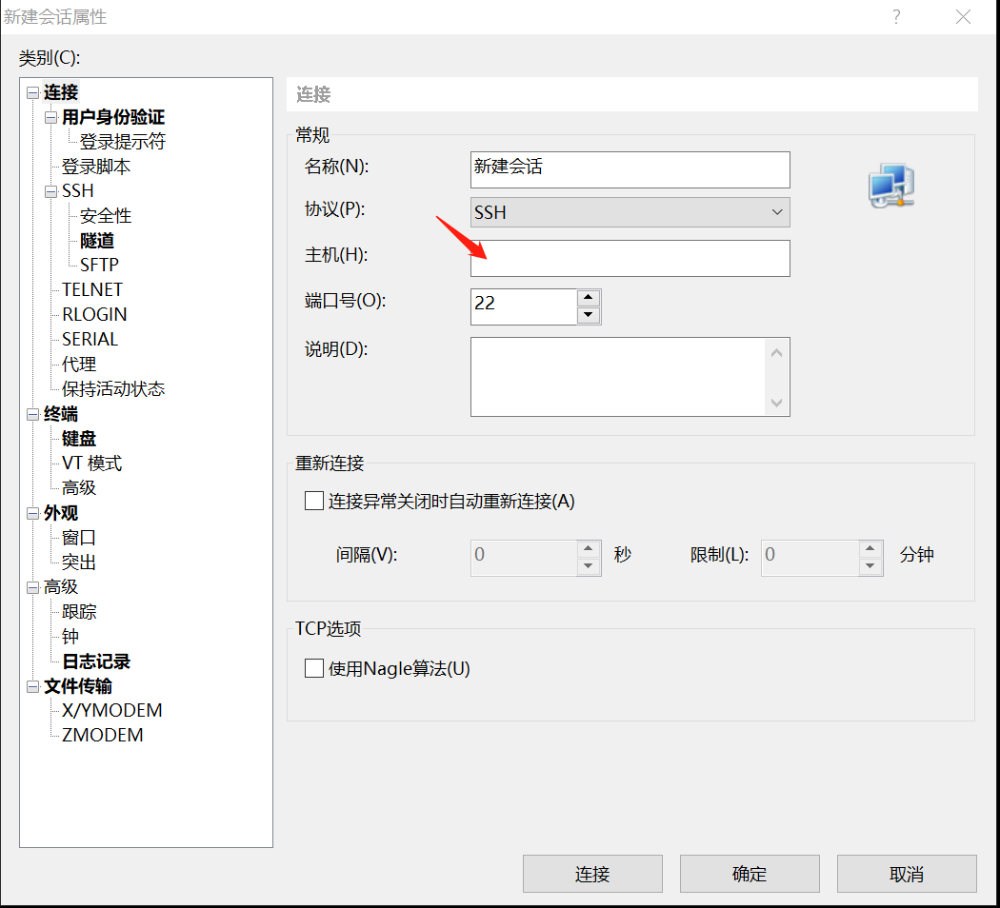
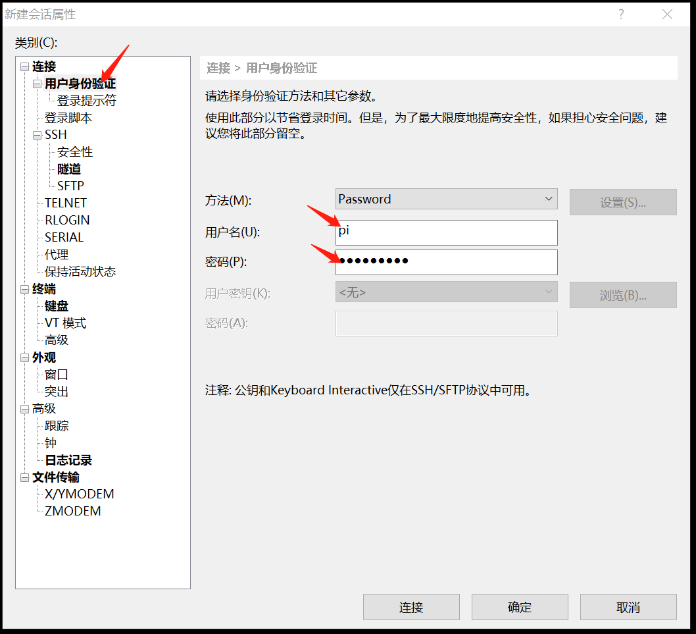

0X00
| 硬件准备 | |
|---|---|
| Raspberry Pi3 | 一个 |
| TF储存卡 | 推荐16GB的高速卡 |
| 路由器 | 一台 |
| 电脑 | 已连接到路由器 |
| 软件准备 | |
|---|---|
| SD Card Formatter | 点击下载(Windows版本) |
| Win32 Disk Imager | 点击进入下载链接 |
| 树莓派镜像 | 点击进入下载链接 |
0X01
使用SD Card Formatter格式化SD卡
Win32DiskImager写入树莓派镜像
设置无线网连接
由于新版本的Raspbian系统镜像默认禁用了SSH服务所以我们首先要在TF卡分区中创建ssh(空文件)以便开启SSH远程并且新建wpa_supplicant.conf按照以下的提示写入1
2
3
4
5
6
7
8
9
10
11
12
13
14
15
16
17
18
19
20
21
22
23
24
25
26country=CN
ctrl_interface=DIR=/var/run/wpa_supplicant GROUP=netdev
update_config=1
// 没有密码
network={
ssid="ssid"
key_mgmt=NONE
priority=1
}
// WEP加密
network={
ssid="你的无线网络名称（ssid）"
key_mgmt=NONE
wep_key0="wifi密码"
priority=1
}
// WPA/WPA2加密
network={
ssid="你的无线网络名称（ssid）"
key_mgmt=WPA-PSK
psk="wifi密码"
priority=1
}
开启强制HDMI输出
在TF卡分区中打开config.txt
修改以下参数：
1 | hdmi_safe=1 |
| 项 | 含义 |
|---|---|
| hdmi_safe=1 | 安全启动HDMI |
| config_hdmi_boost=4 | 开启热插拔 |
| hdmi_group=1 | CEA电视显示器 |
| hdmi_group=2 | DMT电脑显示器 |
| hdmi_ignore_edid=0xa5000080 | 忽略自动探测的分辨率 |
| 输出分辨率： | |
| hdmi_mode=4 | 640x480 60Hz |
| hdmi_mode=9 | 800x600 60Hz |
| hdmi_mode=16 | 1024x768 60Hz |
| hdmi_mode=82 | 1080p 60Hz |
0X02
通电测试
以上修改完毕后把TF卡插入树莓派的TF卡插槽内，接上支持输出5V-2A的充电器，正常情况下稍过一会就可以直接在路由器的管理界面看到树莓派的设备。接着我们直接用ssh连接，这里我用的是Xshell
点击新建在主机栏填入树莓派的IP地址，端口默认为22

用户名和密码默认为：
pi
raspberry

连接成功后，可以直接看到树莓派命令行界面。
0